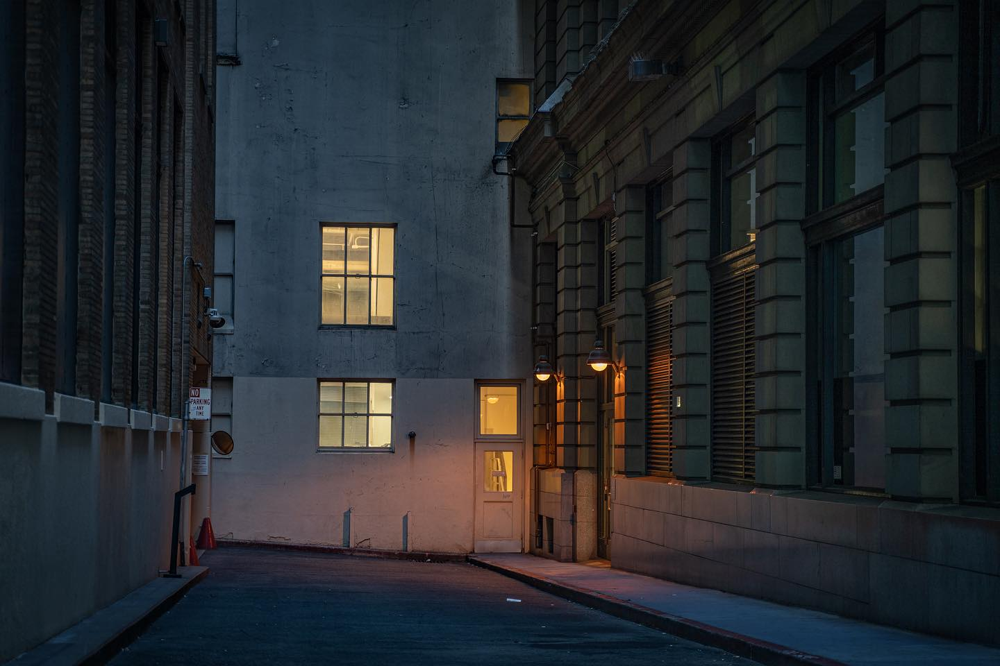

Guillermo Bernaldo de Quirós — architecture, street and landscape photography
FINE ART PRINTS
Photographs are printed on cotton papers with pigment inks, giving a colour life of over a century under normal exhibition conditions.
Every photograph in the Fine Art collection is a limited edition, inspected, dated, numbered and signed by Guillermo Bernaldo de Quirós. A certificate of authenticity accompanies each print.
Available sizes: 65×100cm, 111×165cm and 150×240cm. Panoramic formats keep the same height, with the length varying.
To order, write to the contact page.
ARCHITECTURE
Cities read as structure before they read as places. This body of work follows the line, plane and shadow of urban architecture — from modern towers to older, quieter buildings.
STREET
People and the marks they leave — painted walls, shop windows, a tram pulling away, a vendor at work. Photographed without interrupting anything.
LANDSCAPE
Work made away from the city: long horizons, weather, and the open country of Argentina and beyond, photographed with the same attention to light and composition.
ABOUT

Guillermo Bernaldo de Quirós is a Buenos Aires-based behavioral neurologist and architectural photographer with a distinguished dual career spanning medicine and visual arts.
Medical Background
Dr. Bernaldo de Quirós is a recognized expert in behavioral neurology, specializing in childhood hyperactivity disorders (ADHD) and related conditions. He completed his advanced training at the Kennedy Schriver Center at Harvard University in Boston, United States, bringing international expertise to his practice in Argentina. He currently serves as Director of the Center for Behavioral Neurology and works in the Pediatrics Department at CEMIC.
Photography Passion
Alongside his medical career, Guillermo pursues a deep passion for architectural and landscape photography. His work captures the essence of urban architecture across diverse styles, from modern skyscrapers to traditional buildings, with a keen eye for composition and light. His portfolio has been featured on international platforms including Inspiration Grid and has garnered nearly 100,000 project views, reflecting his distinctive visual perspective on cities worldwide.
Bridging Two Worlds
Guillermo's unique profile combines scientific rigor from his medical training with artistic sensibility from his photography practice, creating a distinctive perspective that informs both his clinical work and his visual documentation of architecture and urban landscapes.
CONTACT
For print orders, exhibition enquiries and commissions. Tell me which photograph you have in mind and I will reply with sizes, framing and availability.